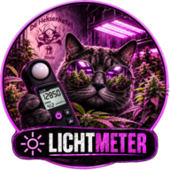

Camera staat uit
Tik hieronder om te meten
Gereed
Beelden blijven op je toestel en worden niet opgeslagen.

LIGHT / PLANTLicht-Meter WEBIPHONE · IPAD · ANDROID
Vergelijk lichtverdeling met een relatieve camera-index. Kalibratie geeft een indicatieve luxschatting.
Beelden blijven op je toestel en worden niet opgeslagen.
LICHTBRON
RELATIEVE LICHTINDEX
--indexADVANCED
Van één stabiele meting naar een concreet lichtplan.
IOS INSTALLEREN
Open in Safari, tik op Delen en kies Zet op beginscherm. Daarna werkt de interface ook zonder netwerk.
Meet negen punten op dezelfde hoogte. Verplaats je telefoon en leg ieder punt pas vast wanneer de status stabiel is.